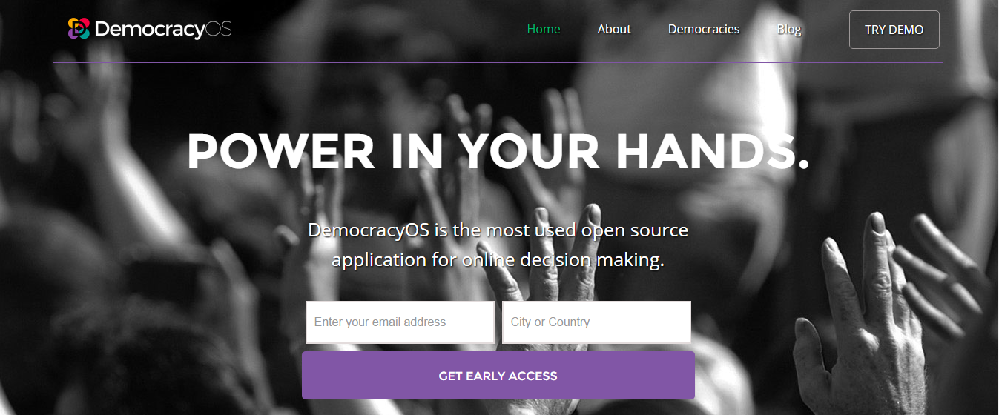
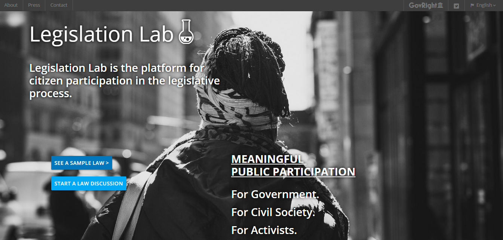

Paper prepared by Sanjana Hattotuwa at the invitation of Dr. Asanga Welikala for a preparatory advisory roundtable on a new constitution for Sri Lanka, hosted by the Centre for Policy Alternatives (CPA), the Constitution Building Programme of the International Institute for Democracy and Electoral Assistance (International IDEA), and the Edinburgh Centre for Constitutional Law (ECCL) inn collaboration with the Government of Sri Lanka.
An Ashoka, Rotary World Peace and TED Fellow alumn, Sanjana has for over twelve years explored and advocated the use of Information and Communications Technologies (ICTs) to strengthen a just peace, reconciliation, human rights and democratic governance. He set up and curates the award winning Groundviews, Sri Lanka’s first citizen journalism website. Teaching new media literacy, web activism, digital security and online advocacy in Sri Lanka and internationally, he also works extensively on information management during crises, both sudden-onset and protracted.
The backdrop
Media reports just before the Parliamentary Election held on 17th August 2015 indicated that the Government of Sri Lanka had entered into a Memorandum of Understanding with Google to bring around 14 high-altitude balloons above Sri Lanka to provide more seamless Internet access. Sri Lanka will be the first country in the world to employ these balloons, called Project Loon[1], commercially and at this scale.Though the MoU wasn’t made public and many questions around cost of access and coverage remain, one of Google’s avowed goals under Project Loon is to to connect people in rural and remote areas and help fill coverage gaps.
Along with more traditional investments around telecommunications infrastructure and market imperatives, it can be expected that in under five years – the term of the new government – Sri Lanka will enjoy coast to coast wireless broadband coverage, with a population that is connected through at least one platform or one device, to the Internet, web and social media.
The trend is unmistakable.
Central Bank statistics reveal Sri Lanka has 107 phones for every 100 citizens[2]. Year on year, mobile based Internet subscriptions rose 85.8% and Internet penetration stands at around 16.4%, both according to the Central Bank which itself admits the actual numbers of those connected could be much higher[3]. Upwards of 2.7 million Sri Lankans are on Facebook alone. According to data by market research company TNS[4] Jaffna shows the highest per capita Internet penetration in Sri Lanka. Video (i.e. TV) consumption is already shifting online, from terrestrial broadcast (which means that citizens are watching content when they want, sometimes more than once, and socially sharing what they view, along with opinions on it).
Information in the public domain increasingly suggests the 18-24 demographic in Sri Lanka, vital to engage with around transitional justice and reconciliation, don’t meaningfully engage with mainstream media (MSM) as newspapers, radio or TV. Wherever they are, they engage with MSM content primarily through smartphones, Facebook and chat apps and also produce content of their own, contesting and complementing mainstream media.
Senior journalist and media critic Ranga Kalansuriya’s social survey based research in early 2015:
“The primary results shows that the internet, mainly the social media, is becoming game changer within the paradigm threatening the conventional media in a considerable way.
Almost half of the sample feels that the media content impacted on their decisions to some extent at the elections while, interestingly one thirds feel there had been no impact at all. The most impacted media was the television for almost 60 percent and then it was the internet for a group closer to 25 percent. The newspaper impact for less than 10 percent and radio impacted on only 5 percent.”[5]
A poll done by Social Indicator (SI), the social polling arm of the Centre for Policy Alternatives (CPA) in late June and early July this year in the Western Province – as the most developed in the country – paints a picture of digital life other Provinces will mirror and may even leapfrog a few years hence. Asked if web usage if more content/sites were available in Sinhala or Tamil, 57.1% said yes. 79.1% accessed the Internet through their smartphone. Facebook was used by 73.3%. 60.2% said compared to a year ago, they spent more time online.
42.2% said Ministers in government should use social media to engage with the public. Along with this snapshot of access and use comes also insights into Sri Lanka’s discursive frameworks. 50% said that over the past year, they had decided to learn more about a political or social issue because they had read it online. Interestingly, 61.5% said the action they took was to create awareness amongst family and friends.
In the Western Province today and in a few years throughout the island, primarily through smartphones and tablets, citizens will produce, disseminate and discuss issues anchored to entertainment and gossip as well as news and current affairs via social media platforms and apps, increasingly in Tamil and Sinhala. The effects of these online conversations will also deeply resonate with social networks and communities that aren’t as well connected to online media.
Deliberative structures
Public engagement through these ubiquitous, multi-media and multi-lingual networks will for Government, and indeed, it’s vocal opponents, undergird new and hopefully innovative mechanisms for public confidence building, perceptions management and strengthening electoral support around policymaking, governance and constitutional reform. As importantly, tools, techniques and social networks to win votes around elections that go on to be under-utilised at best once elected to power is not a viable model. A government, out of enlightened self-interest at least, should seriously consider the importance of public engagement through technology after it is elected and especially when it is under siege. The central challenge here is not one of technology, it is one of political leadership.
Agility, responsiveness, transparency. Failing fast (not waiting until the final stages to acknowledge failure, but recognising it early on and addressing it) and failing forward (not being scared to admit failure and using it as a lesson to improve product and process in the future). Iterative design (learning to design better at every stage based on user feedback and interaction). These are some core principles of product development and design in the world of technology today. Though deeply relevant and replicable, they remain largely unknown as a basis for a government to think, operate, react or plan, or indeed, the blueprint of a constitutional reform process to be anchored to. This is especially relevant in a context where citizens think as consumers and expect levels of service delivery and engagements with government, and governmental services or processes, on par with that which they enjoy from trans-national corporations that manage (all social media operations on) the Internet. An obdurate, rude or unresponsive government risks irreparable reputational damage over a very short time and across geographies and communities. By not embracing participatory and responsive mechanisms to plan for and execute policy making as well as constitutional reform, governments risk the best of intentions to radically reform polity and society. The conversations over social media around the legislative drafting of the 19th Amendment – the delays in translation, the inability for the public to engage in structured debates or input, the multiple versions circulating in the public domain through non-official sources, the lack of direct, public engagement by government to demystify clauses – flag reservoirs of frustration, not all by spoilers, around the non-use of existing technology around a vital reform initiative.
Much more can and should be done. The examples that follow aren’t prescriptive. Each offers a way of thinking, seeing, or responding to a challenge that is integral to constitutional change or reform writ large. Each offers a template worthy of adoption and adaptation, given the innovation and skills that reside within Sri Lanka especially in the tech community and civil society. With strategic deployment and careful curation, each offers the promise of a public more aware of and by extension, responsive towards key issues around constitutional reform.
Technology platforms, apps and services
Democracy OS[6] is a citizen engagement platform for democracy at its most distilled – getting citizens to vote on an idea, and through this, getting them involved in processes of deliberation and debate around core issues. As noted on the Democracy OS website, with 4 million+ citizens, Buenos Aires became the first city to have a Digital Democracy in place with each of the 16 parties in Congress agreeing to present one bill to be debated along with every citizen of the city online. DemocracyOS has been used for, inter alia, policymaking, electoral reform, citizen participation and accountability in India, Chile, France, Mexico, Peru, Brazil and Colombia.

The usual example on deliberative democracy over digital platforms is to study President Obama’s campaigns and use of the media, including social media, as both candidate and incumbent. A Washington Post article from May this year[7] is an easy to access and understand blueprint on how Obama and his team strategically designed the message to fit the medium, and importantly saw engagement over media as inextricably entwined with and central to Obama’s political projects. Though important, of particular resonance here is not so much the use of social media but the imaginative mind-set behind the adaptation, adoption and appropriation of new and existing media for political ends.
For example, after the debacle of Obama’s healthcare website[8], the President, instead of going on the defensive, acknowledged the problem and furthermore, appropriated comedy and comedians, including by spoofing himself, to push the same message. Millions engaged, and the project was ultimately – technically as well as politically – a success. The perception of issues is managed today not necessarily by those with the widest reach or largest readership, but by those able to generate the most viral content.
To be shared and liked is a new social currency that extends well beyond elections and shapes public discourse, even offline. If interest in constitutional reform and its more substantive points are to reach the masses, along with imaginatively produced content, arguably the best way on Facebook alone would be by leveraging the reach of a popular female model and the near universal love for cricket![9]
This shift from the strongly didactic to a more deliberative and engaging approach, from constitutional reform as entirely exclusive to a process that engaged the public was most pronounced in the (failed) experiment in Iceland to create a “crowdsourced constitution”.
As noted in Slate[10],
… 25 constitutional drafters [used] social media to open up the process to the rest of the citizenry and gather feedback on 12 successive drafts. Anyone interested in the process was able to comment on the text using social media like Facebook and Twitter, or using regular email and mail. In total, the crowdsourcing moment generated about 3,600 comments for a total of 360 suggestions. While the crowd did not ultimately “write” the constitution, it contributed valuable input. Among them was the Facebook proposal to entrench a constitutional right to the Internet, which resulted in Article 14 of the final proposal.
The failure to pass the new constitution wasn’t linked to the means of soliciting input from the general public. Lessons around the exercise in fact urge that in the future, more planning and consideration has to go into the process of constitutional reform, including more human and financial resources around the use of technology. In a much smaller way, but quite significant because of the violence surrounding discursive and critical spaces in Sri Lanka under the previous government, the growth of memes of Facebook is another instructive lesson in how popular culture over the Internet can strengthen (or seriously undermine) public appreciation of key issues. As noted by me three years ago[11].
The growth of the Sri Lankan meme on the web is a relatively recent phenomenon. It now has its own Facebook presence, with more fans than the Daily Mirror page (19,000+ vs. 16,000). There are historical antecedents. “Me kawuda? Monawada karanne?” (Who is he? What is he doing?) posters during Premedasa’s government was a meme – two sentences plastered on public spaces creating a questioning so subversive that it led to violent ends for producer and playwright… [Now] memes are shared on individual profiles, which are then ‘liked’ by others, downloaded, emailed, embedded on websites and flagged on Twitter. It reaches, quite literally, hundreds of thousands effortlessly… memes essentially critique the mainstream and change the story. In changing the story, memes can contribute to changing the status quo. Something for governments, including our own, to keep in mind the more censorious they get, and want to be.
The use of memes by a constitutional reform project can be seen as the modern day equivalent of, for example, South African cartoonist Zapiro’s interrogation of constitutional reform in the mid-90’s, albeit over social media and generated digitally, without confirmed authorship. With the focus of policymakers and constitutional reformers usually on mainstream media’s reach and effectiveness at shaping public opinion (which to date, in so far as metrics around the influence of TV talk shows in Sri Lanka go, is valid) the use of social media in particular, and Internet, web and mobile platforms in general around a reform process remains nascent, even as the diversity of content, its reach and spread grows.
Three technologies present themselves immediately in this regard – Facebook, Twitter and a platform that is not often talked of in the same breath as social media, WhatsApp. Facebook and Twitter growth in Sri Lanka is widespread and shows explosive growth. Groundviews recently archived tweets around the recently concluded Parliamentary Election[12]. The archive, spanning eight weeks and including two official hashtags used by the majority of users around the election (#SLGE15 and #GenElecSL), captured 174,663 tweets. Tweets using variations of these two hashtags, as well as not using either were also in the tens of thousands – far too much in fact to archive without industrial grade technical architectures. Yudhanjaya Wijeratne, a respected blogger and data wonk, published a study of Facebook around the election[13]. What was evident through this study was that the Mahinda Rajapaksa camp was the most strategic in their use of Facebook to engage, not just publish. Whereas one lesson is that in a less controlled, contained and censorious context, propaganda by any one camp has far less traction and unchallenged reach, this nuanced and strategic use of Facebook alone can and should be adapted to support wider deliberation and awareness raising around constitutional reform, amongst the same demographics. Examples from Libya[14] and Liberia[15] are also instructive in this regard.
Chat apps in general, and WhatsApp in particular lie outside the scope of many social media discussions and studies, and this is a pity. The hugely popular mobile instant messaging app, bought by Facebook for $22 billion in 2014, saw unprecedented use by the BBC in India’s 2014 General Election to engage voters around key issues[16]. In Sri Lanka, the Centre for Monitoring Election Violence (CMEV) used WhatsApp as a platform to publish, to hundreds of subscribers, information around election violence at both the Presidential and Parliamentary elections. The reason for doing so was to create a platform, in January particularly, largely impervious to censorship (WhatsApp is distributed and has no central server – shutting it down requires data across all mobile networks to be shut off). The BBC’s use is more instructive, and as noted on its website,
There are certainly valid editorial arguments about whether BBC News should really be treating news stories in this way, and whether [it was right] to test out emoticons… However, subscribers really seemed to like the item – it had by far the biggest engagement, in terms of responses, of any item we posted on WhatsApp, with hundreds of people sending back their emoticon faces.
How the BBC has now built on the experience of WhatsApp in India during the election to use chat apps more broadly[17] is a lesson in how these apps can also be employed to create targeted, interactive, engaging deliberative networks, across key demographics, to complement strategies to use content via other media targeted at an older demographic around constitutional reform. Another key example here is the possible use of Viber – an app described by the New York Times as one that helped install the current President in power[18] – to create public chats with select individuals in government around key policy issues. Again, it is the Rajapaksa camp that shows the way others must go[19], if public opinion is to be captured and support for reforms retained.
Technology for the drafters
Aside from all this, projects like Google Constitute[20] help those at the helm of drafting a (new) constitution access comparative examples and information from other countries. The use of data and data visualisation (dataviz) by the Comparative Constitutions Project[21] is also instructive in how specialist platforms, coding and information design can help constitution making. Legislation Lab[22] provides platforms for constitution making process that benefit citizens by making it easy to participate, and for drafters, provides a ‘dashboard’ of information around key policies or points that can help, in or close to real time, with course correction, editing, political buy in, negotiations and other strategic imperatives. A live example in this regard is how it is being used in Chile to discuss its constitution[23]. And if perusing information on that site is a problem (it’s all in Spanish) enter Google Translate. Constitution makers no longer need to rely on time consuming human translations to avail themselves of content or cutting-edge debates in another language – as of now, Google Translate covers 90 languages in total (for text translation). Merely copy a URL into Google Chrome, say yes to a prompt and a translation offering – depending on the complexity of the legal document – a gist of the original, opens instantly.

Conclusion
Why do any of this at all? Why does it matter? There is some comfort in the known and business as usual, especially around constitutional reform which has always been led by elites through exclusive, top-down processes that at best only episodically solicit public input, and that too with great suspicion. After over two centuries, the revered Encyclopaedia Britannica went out of print in 2012[24]. As of August 24, 2015 there are 4,951,563 articles on Wikipedia, with over 780 million edits across these articles, an average of around 21. 26 million users are registered with Wikipedia. 2.4 billion visited the site in July 2015 alone[25]. The demise of Encyclopaedia Britannica in our digital age and the astonishing rise and use of Wikipedia is a lesson for constitution making as well – a few experts no longer command complete authority, attention and agency. Recognition there are many experts in the commons, and embracing their feedback and input in a process of constitutional reform is the basic starting point for a process serious about engendering public support around key, contentious issues. Wikipedia is so successful because it is plugged into so many devices, platforms, apps and services seamlessly, and for free. It is accessible in many languages, including in Sinhala and Tamil, and encourages participatory approaches to content curation and creation. Wikipedia (and wikis as a web platform more generally) isn’t perfect, and no one technology is or will be. What information and communications technologies (ICTs) in general offer constitutional reform processes are a menu of adaptable, responsive, scalable, multi-lingual, creative and engaging tools to produce, discuss, disseminate, visualise and archive complex ideas.
The mere introduction of technology into a constitution reform process doesn’t guarantee its success. What is now evident though is that the non-introduction, in a strategic manner, of relevant ICTs in a reform process is almost a guarantee of its failure, or capture by spoilers who are (usually) more adept with new media.
… while techno-utopians overstate the affordances of new technologies (what these technologies can give us) and understate the material conditions of their use (e.g., how factors such as gender or economics can affect access), techno-dystopians do the reverse, misinterpreting a lack of results… with the impotence of technology; and, also, forgetting how shifts within the realm of mediated political communication can be incremental rather than seismic in nature[26].
Christian Christensen, Department of Informatics and Media, Uppsala University in SwedenConstitutional reformers cannot afford to be techno-dystopians, and those from the technology community and media sector, even in support of the most radical reform, cannot afford to be techno-utopians. Careful, measured and sober evaluations around embracing technology can undergird reform processes more resilient to spoiler dynamics, with greater traction in public consciousness, taking root in communities, giving a wider public a sense of ownership in the ultimate document and other benefits associated with deliberative, participatory mechanisms.
It is within Sri Lanka’s grasp. We should not let the opportunity go.